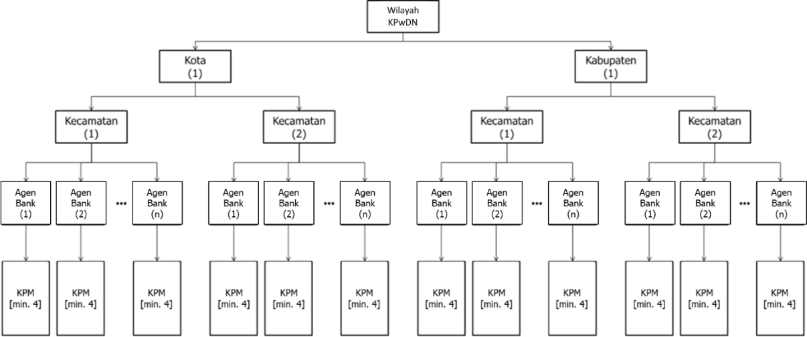
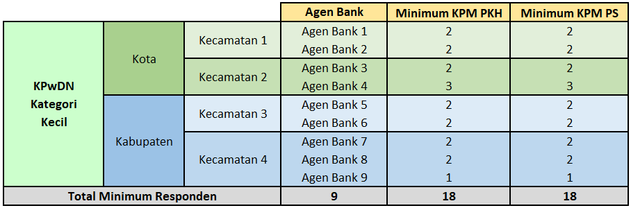
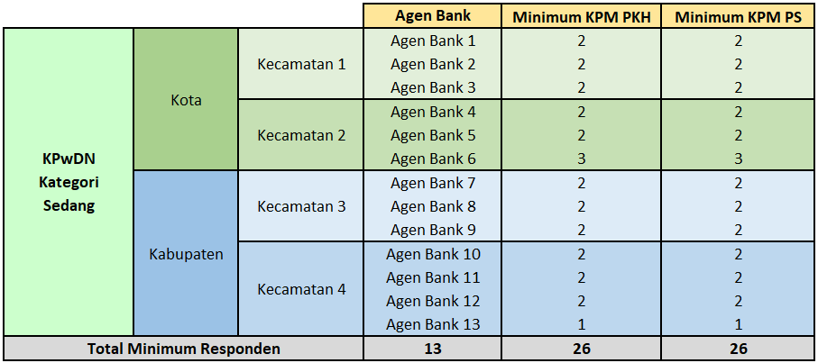
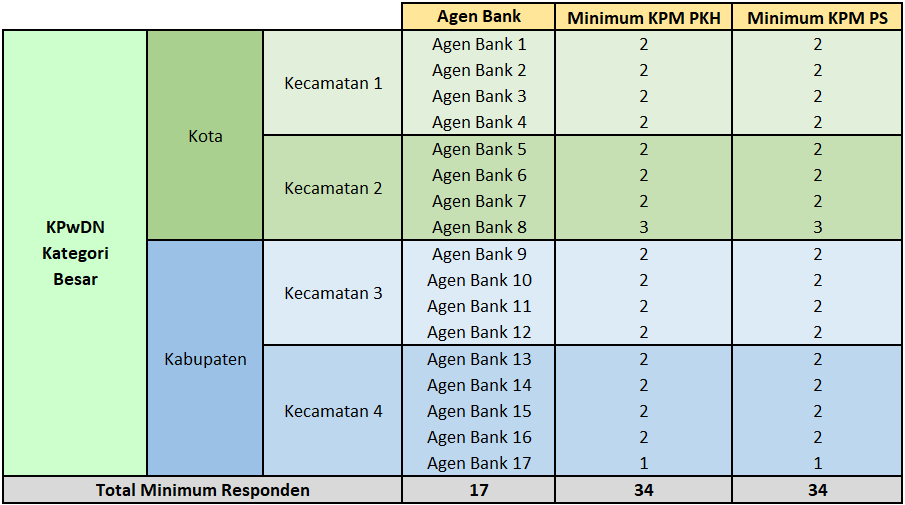

| KPwDN | Kategori | KPM PKH | KPM PS | Agen | Total |
|---|---|---|---|---|---|
| KPwDN Papua Barat | Kecil | 9 | 18 | 18 | 45 |
| KPwDN Papua | Kecil | 9 | 18 | 18 | 45 |
| KPwDN Kalimantan Utara | Kecil | 9 | 18 | 18 | 45 |
| KPwDN Balikpapan | Kecil | 9 | 18 | 18 | 45 |
| KPwDN Kepulauan Bangka Belitung | Kecil | 9 | 18 | 18 | 45 |
| KPwDN Maluku Utara | Kecil | 9 | 18 | 18 | 45 |
| KPwDN Kalimantan Timur | Kecil | 9 | 18 | 18 | 45 |
| KPwDN Kepulauan Riau | Kecil | 9 | 18 | 18 | 45 |
| KPwDN Kalimantan Tengah | Kecil | 9 | 18 | 18 | 45 |
| KPwDN Maluku | Kecil | 9 | 18 | 18 | 45 |
| KPwDN Bali | Kecil | 9 | 18 | 18 | 45 |
| KPwDN Sulawesi Barat | Kecil | 9 | 18 | 18 | 45 |
| KPwDN Gorontalo | Kecil | 9 | 18 | 18 | 45 |
| KPwDN Pematang Siantar | Kecil | 9 | 18 | 18 | 45 |
| KPwDN Bengkulu | Kecil | 9 | 18 | 18 | 45 |
| KPwDN Sulawesi Utara | Sedang | 13 | 26 | 26 | 65 |
| KPwDN Kalimantan Selatan | Sedang | 13 | 26 | 26 | 65 |
| KPwDN Jambi | Sedang | 13 | 26 | 26 | 65 |
| KPwDN Sulawesi Tenggara | Sedang | 13 | 26 | 26 | 65 |
| KPwDN Sulawesi Tengah | Sedang | 13 | 26 | 26 | 65 |
| KPwDN DKI Jakarta | Sedang | 13 | 26 | 26 | 65 |
| KPwDN Sibolga | Sedang | 13 | 26 | 26 | 65 |
| KPwDN DI Yogyakarta | Sedang | 13 | 26 | 26 | 65 |
| KPwDN Aceh | Sedang | 13 | 26 | 26 | 65 |
| KPwDN Riau | Sedang | 13 | 26 | 26 | 65 |
| KPwDN Lhokseumawe | Sedang | 13 | 26 | 26 | 65 |
| KPwDN Kalimantan Barat | Sedang | 13 | 26 | 26 | 65 |
| KPwDN Sumatera Utara | Sedang | 13 | 26 | 26 | 65 |
| KPwDN Sumatera Barat | Sedang | 13 | 26 | 26 | 65 |
| KPwDN Sumatera Selatan | Sedang | 13 | 26 | 26 | 65 |
| KPwDN Banten | Sedang | 13 | 26 | 26 | 65 |
| KPwDN NTT | Besar | 17 | 34 | 34 | 85 |
| KPwDN Jember | Besar | 17 | 34 | 34 | 85 |
| KPwDN Malang | Besar | 17 | 34 | 34 | 85 |
| KPwDN Solo | Besar | 17 | 34 | 34 | 85 |
| KPwDN NTB | Besar | 17 | 34 | 34 | 85 |
| KPwDN Tasikmalaya | Besar | 17 | 34 | 34 | 85 |
| KPwDN Purwokerto | Besar | 17 | 34 | 34 | 85 |
| KPwDN Sulawesi Selatan | Besar | 17 | 34 | 34 | 85 |
| KPwDN Tegal | Besar | 17 | 34 | 34 | 85 |
| KPwDN Cirebon | Besar | 17 | 34 | 34 | 85 |
| KPwDN Lampung | Besar | 17 | 34 | 34 | 85 |
| KPwDN Kediri | Besar | 17 | 34 | 34 | 85 |
| KPwDN Jawa Timur | Besar | 17 | 34 | 34 | 85 |
| KPwDN Jawa Tengah | Besar | 17 | 34 | 34 | 85 |
| KPwDN Jawa Barat | Besar | 17 | 34 | 34 | 85 |

PETUNJUK TEKNIS
RESPONDEN
Responden dalam kegiatan monitoring ini dibagi menjadi dua jenis, yaitu responden Agen Bank dan responden KPM (Program Keluarga Harapan/PKH dan Program Sembako). Setiap jenis responden memiliki kuesioner masing-masing.
Setiap responden yang diwawancara hanya dapat mewakili satu kelompok responden saja. Bagi KPM yang menerima PKH dan Program Sembako harus dipilih menjadi responden KPM PKH atau KPM Program Sembako saja.
Berikut adalah kriteria dari masing-masing jenis responden:
| Jenis Responden | Kriteria Responden |
|---|---|
| KPM (Program Sembako dan PKH) | - Pernah menerima bansos non tunai di tahun 2025 - Minimal telah 3 kali* mendapatkan PKH dan/atau Program Sembako - Berdomisili di wilayah survei |
| Agen Bank | - Pemilik/pengelola Agen Bank - Minimal telah 2 kali menyalurkan bansos non tunai di tahun 2025 - Berdomisili di wilayah survei |
*Tidak harus secara berurutan dalam 3 periode penyaluran bantuan.
Responden KPM diwajibkan membawa KTP Elektronik pada saat wawancara.
Metode Sampling Responden KPM

Setiap KPwDN menentukan satu wilayah kota dan satu wilayah kabupaten (jika tidak terdapat kota atau kabupaten, maka dapat disesuaikan, misal dua kota atau dua kabupaten). Pada setiap wilayah tersebut, pilih dua kecamatan sehingga setiap KPwDN meliputi 4 kecamatan.
Pada setiap kecamatan, tentukan sejumlah Agen Bank yang akan dijadikan responden. Dari setiap Agen Bank, pilih secara purposive (berdasarkan kriteria pada poin 3) minimal 4 KPM (2 KPM PKH dan 2 KPM Program Sembako). Jumlah KPM dapat melebihi batas minimal, menyesuaikan jumlah sampel minimum di setiap wilayah KPwDN. Penentuan jumlah sampel minimum di masing-masing KPwDN dilakukan dengan membagi wilayah KPwDN ke dalam tiga kategori: kecil, sedang, dan besar. Pembagian kategori ini berdasarkan jumlah penerima BSNT PKH dan Program Sembako di masing-masing wilayah kerja KPwDN. Berikut adalah ilustrasi pembagian minimum responden secara rinci untuk masing-masing KPwDN:
KPwDN Kecil

KPwDN Sedang

KPwDN Besar

- Sebaran Responden KPM Menurut KPwDN
KUESIONER
Jenis kuesioner yang digunakan pada saat wawancara dengan responden adalah kuesioner berbasis kertas (paper-based questionnaire). Hal ini ditujukan agar enumerator memiliki salinan hasil wawancara. Hasil wawancara pada kuesioner berbasis kertas kemudian harus dilakukan proses entry melalui kuesioner online (online-based questionnaire) agar data dapat dikompilasi dan diolah untuk penyusunan laporan analisis hasil assessment monitoring bansos.
Kode [MA] pada pertanyaan di kuesioner kertas menunjukkan bahwa pertanyaan tersebut dapat diisi dengan lebih dari satu jawaban (Multiple Answer).
Kode [SA] pada pertanyaan di kuesioner kertas menunjukkan bahwa pertanyaan tersebut hanya dapat diisi dengan satu jawaban saja (Single Answer).
Kode [PKH] pada pertanyaan di kuesioner kertas menunjukkan bahwa pertanyaan tersebut hanya ditanyakan untuk responden KPM PKH.
Kode [PS] pada pertanyaan di kuesioner kertas menunjukkan bahwa pertanyaan tersebut hanya ditanyakan untuk responden KPM Program Sembako.
Apabila pada kuesioner KPM tidak terdapat kode [PKH] maupun [PS] pada suatu pertanyaan, maka pertanyaan tersebut berlaku bagi kedua jenis responden (KPM PKH maupun Program Sembako).
Seluruh pertanyaan wajib untuk diisi, kecuali jika diinstruksikan untuk dilewati.
Pertanyaan ditanyakan sesuai dengan urutan nomor pertanyaan, kecuali terdapat instruksi khusus untuk menuju nomor pertanyaan tertentu.
Harap diingat untuk mengisi Nomor Kuesioner dan Nama Enumerator/Surveyor pada halaman pertama (di bagian atas) kuesioner kertas. Nomor kuesioner disesuaikan secara mandiri dengan memberikan kode yang berbeda antar jenis responden.
Untuk mengisi pertanyaan pada kuesioner kertas, beri simbol centang (✓) pada lingkaran (◯) yang berada di samping kiri jawaban yang dipilih atau isilah dengan angka pada kotak (☐) sesuai dengan petunjuk yang diberikan pada setiap pertanyaan. Apabila terdapat pertanyaan yang terbuka isilah jawaban pada kolom yang telah disediakan.